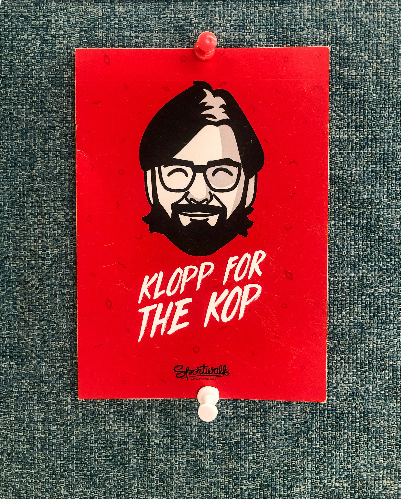

- 해외축구
- 국내축구
- 여자축구
속보
위르겐 클롭 감독은 이번 시즌이 끝나고 사임하기로 하였다.

잉글랜드 프리미어리그(EPL) 리버풀 위르겐 클롭(57) 감독이 팀을 떠난다.
리버풀은 “클롭 감독이 올 시즌을 마지막으로 팀을 떠난다”고 26일 밝혔다. 클롭 감독은 독일 마인츠, 도르트문트 감독을 거쳐 2015년 리버풀 지휘봉을 잡았다. 2019-2020시즌 EPL 우승, 2018-2019시즌 UEFA(유럽축구연맹) 챔피언스리그 우승 등을 일궜다. 2019, 2020년엔 FIFA(국제축구연맹) 올해의 감독상을 받았다. 리버풀은 현재 리그 선두(14승6무1패) 순항 중이다. 클롭 감독은 리버풀을 다시 강팀으로 만들었다는 평가를 받는다.
그런데 돌연 사임 소식이 전해진 것이다. 그는 구단을 통해 “에너지가 고갈됐다”고 밝혔다. 클롭 감독은 “나는 이 도시, 클럽, 팬들을 사랑한다. 하지만 결정을 내려야 한다고 생각했다”고 했다.
다만 클롭 감독이 시즌 도중 사임 의지를 드러낸 것은 적절치 않았다는 지적도 나온다. 리버풀은 이번 시즌 EPL, FA컵, 카라바오컵, UEFA 유로파리그 등 4대회 우승 가능성이 있다.